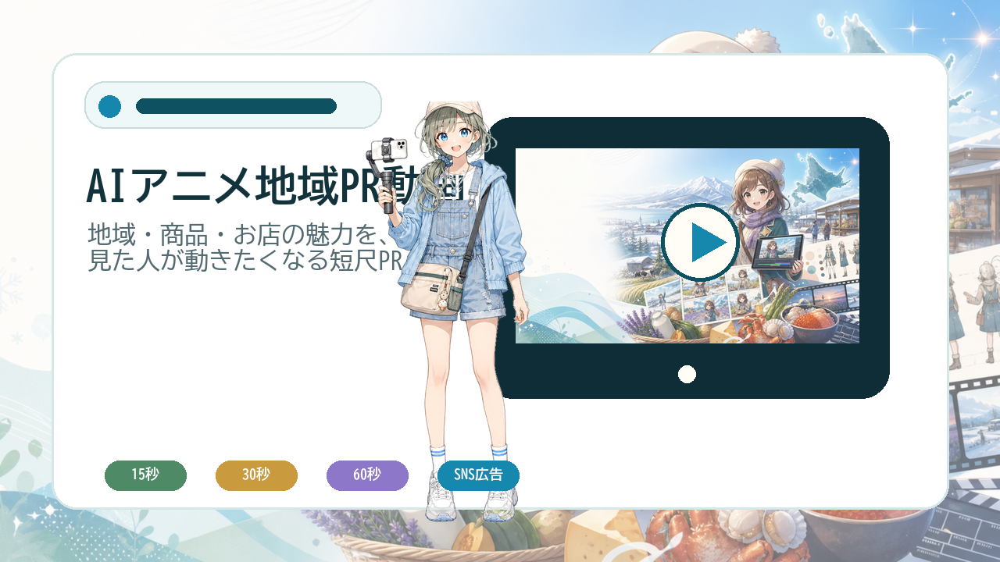
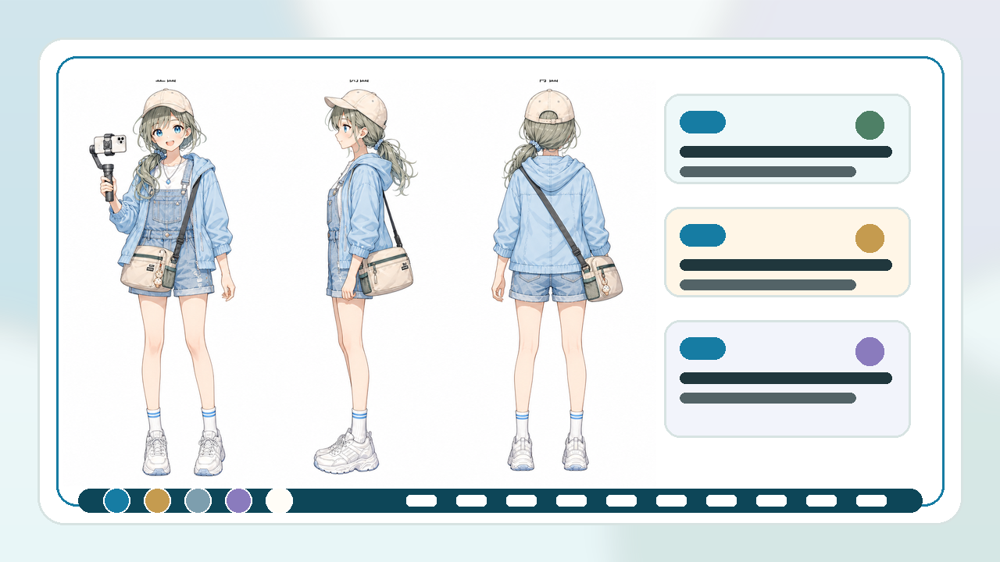
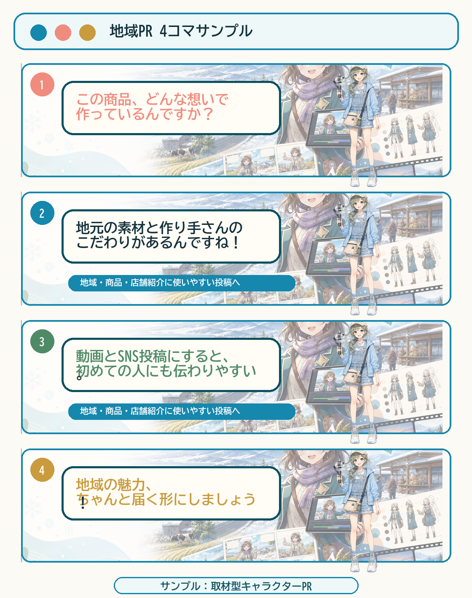
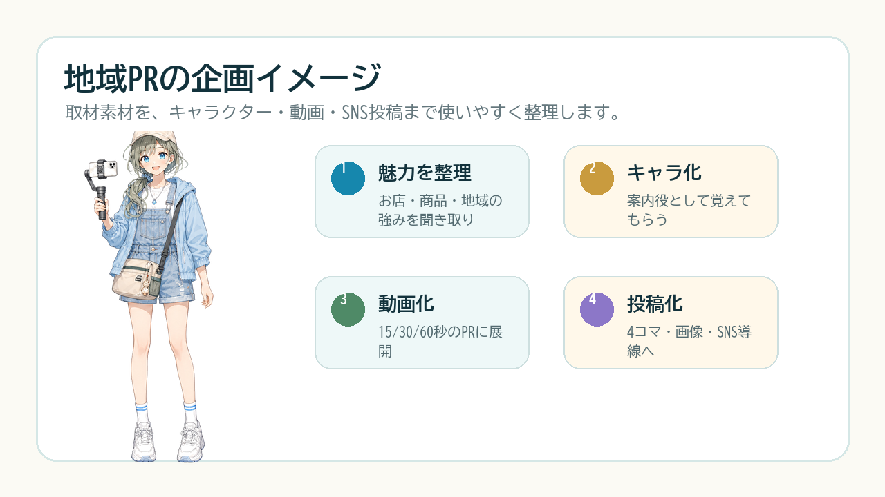

道の駅、地域企業、店舗、商品をまとめて魅力化。
Hokkaido Local Character PR
地域の魅力を、AIキャラクターで「行きたい・買いたい・応援したい」に。
道の駅、地域企業、飲食店、農産物、観光施設、イベント告知に。北海道在住のAIクリエイターすーさんが、地域の物語をAIアニメ・地域キャラクター・SNS投稿コンテンツとして届けます。
地域ブランドPR
地域キャラクター
SNSショート動画
商品・店舗PR
北海道在住
地域の空気感を汲み取って制作
AI Character PR
店舗・商品・イベントを覚えてもらう
Problem
良い商品や場所があるのに、SNSや広告で伝わりきらない。
北海道には、食、農産物、ものづくり、温泉、宿泊、観光、イベントなど、伝えたい魅力がたくさんあります。一方で、写真や文章だけでは差別化が難しく、商品や店舗の背景まで届きにくいこともあります。
AIキャラクターPRなら、地域・店舗・商品を“案内役キャラ”として覚えてもらいながら、魅力やこだわりを短く、楽しく、SNSで広げやすい形にできます。
01商品・店舗の魅力をもっとわかりやすく伝えたい
02地域ブランドやお土産を覚えてもらいたい
03SNS投稿やイベント告知のネタが足りない
04地域らしさのあるキャラクターを作りたい
Why Su-san
北海道在住だから、地域の温度感を大切にできます。
道外向けに見せたい魅力と、地元の人が大切にしている空気感。その両方を意識しながら、キャラクターやストーリーに落とし込みます。
ただ目立つ動画ではなく、「行ってみたい」「買ってみたい」「食べてみたい」「応援したい」と思ってもらえる地域PRを目指します。
農産物、加工品、お土産、飲食店メニューを物語化。
祭り、マルシェ、展示会、地域キャンペーンを発信。
地域・店舗・商品の案内役になるキャラクターを設計。
Core Services
地域の価値を、発信しやすいコンテンツに。
商品PR動画、店舗紹介、キャラクター制作、SNS投稿素材まで、地域の目的に合わせて制作します。

01
AIアニメ地域PR動画
Local Animation PR
店舗、商品、道の駅、観光施設、イベントの魅力を、15秒・30秒・60秒の短尺動画に。SNSやWebで使いやすく整えます。

02
地域キャラクター制作
Local Character Design
地域、店舗、商品を覚えてもらう案内役キャラを制作。SNS、チラシ、動画、Webサイトに展開できます。

03
SNS投稿・4コマ漫画
SNS & Comic Content
地域あるある、商品紹介、店舗紹介、イベント告知を、投稿しやすい4コマ漫画や画像コンテンツにします。
Use Cases
北海道のさまざまな地域PRに活用できます。
道の駅・地域拠点
施設の見どころ、商品、周辺スポットを案内キャラでわかりやすく紹介。
農産物・地域商品
作り手の想いや土地の魅力を、ショート動画や漫画に。
飲食店・宿泊・温泉
雰囲気、メニュー、季節の魅力をSNSで伝えやすく。
自治体・商工会
地域イベント、移住促進、地域キャンペーンの発信に。
Portfolio
AI動画・キャラクターPRの制作実績。
コンテスト受賞作品や、地域PRに展開できる映像・キャラクター制作のサンプルをスライド形式でご覧いただけます。
Work Sample
地域PRの企画イメージ。
実際の地域・商品・店舗・施設に合わせて、キャラクターや構成を設計するイメージです。

Storyboard
地域らしい世界観を、動画の設計図に。
商品、店舗、施設、イベントの魅力を、どんな順番で見せるか、どんなキャラクターで案内するかを整理してから動画化します。
- 地域ブランドPRのストーリー設計
- 地域キャラクターの案内役化
- SNS向け短尺動画への展開
Process
地域の魅力を一緒に整理しながら制作します。
- 01ヒアリング
地域、施設、商品、イベントの魅力やターゲットを整理します。
- 02企画・キャラ案
動画構成、案内役キャラ、SNS展開の方向性をご提案します。
- 03制作
AIアニメ、4コマ漫画、投稿画像などを目的に合わせて制作します。
- 04納品
SNS、Web、イベント告知、広告配信に使いやすい形式で納品します。
Profile
すーさん / Hiroyuki Suzuki
カイロプラクター×AIクリエーター
北海道に暮らしながら、AIアニメ・キャラクター・SNS向けコンテンツ制作に取り組んでいます。地域の魅力を、来訪者にも購入者にも地元の人にも伝わる形へ整えることを大切にしています。
Contest Awards & Recognition
- 2025.11Sozo美術館しらはまコンテスト グランプリ受賞
- 2025.11Animonコンテスト 優秀賞受賞
- 2025.12クリスマスDomoAIコンテスト DomoAI賞
- 2025.12Wizaiミニチュアクリスマスコンテスト 優秀賞
- 2026.01淡路島お年玉チャレンジ 入賞
- 2026.01川越AI VIDEO AWARD 2026 3位入賞
- 2026.02人生すっごい楽しい選手権 審査員特別賞
- 2026.04新入社員AI動画選手権 エモい賞
- 2026.05JACC母の日チャリティーコンテスト 審査員特別賞
- 2026.064K AI動画コンテスト 最優秀賞
Contact
地域の魅力を、伝わるキャラクターPRに。
「商品をSNSで広げたい」「店舗や道の駅をもっと知ってほしい」「地域キャラクターを作ってみたい」そんな段階からご相談いただけます。